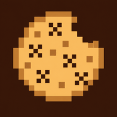

CURRENT COLOUR
DMC —— left0 parked0 done
Preparing your pattern …
Drag to move · Tap a stitch to select its colour · Pinch to zoom
YOUR VIEW
Tap to navigate100 %
Column — · Row —

ONE LITTLE STITCH AT A TIME
Version 0.3.3A new piece starts with a single stitch.
Open your prepared project.
Your pattern and progress are saved on this device.